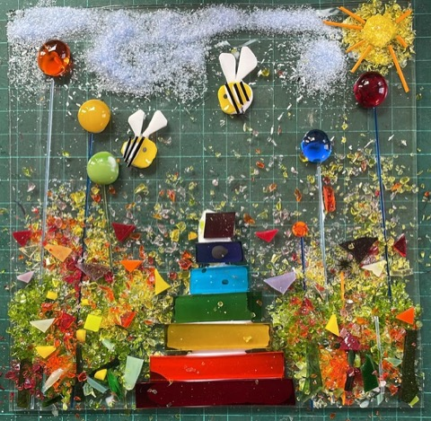
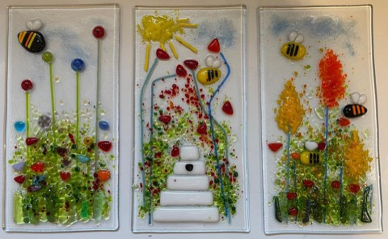
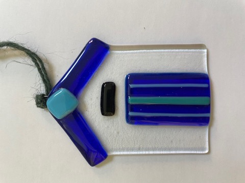
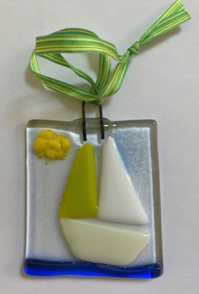
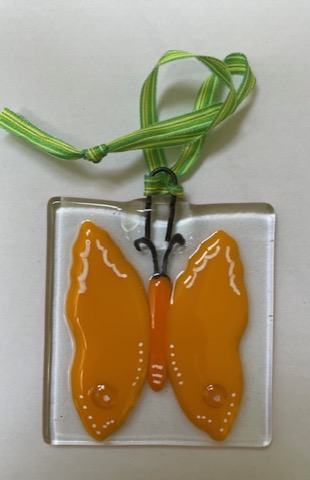
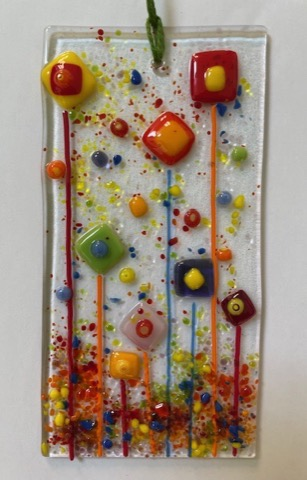
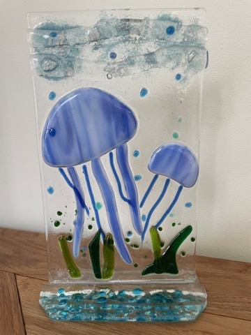
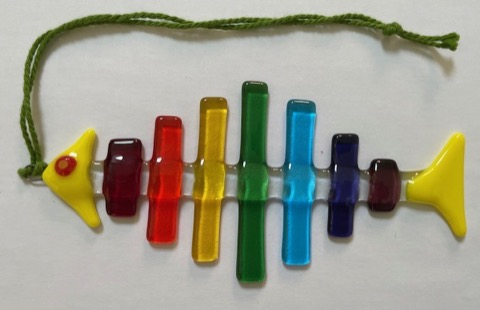
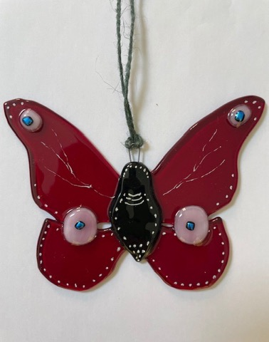
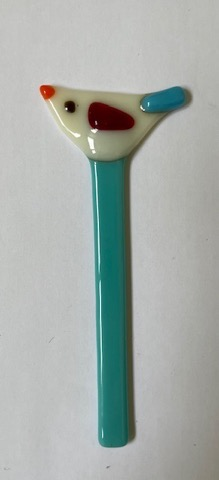

{kind=link}

Rainbow Garden
Bright fused glass inspired by garden meadows, bees and sunshine.
Fused glass art by Deborah Cooke.
Nature-inspired pieces for home and garden.

Bright fused glass inspired by garden meadows, bees and sunshine.

A set of whimsical nature panels with bees among the blooms.

Recent fused glass pieces ready for home or garden.

A cobalt blue hanging house with striped detail.

A cheerful birdhouse ornament with a perched blue bird.

A little boat under a yellow sun, ready to hang.

A bright butterfly suncatcher with wire antennae.

Tall stems and colourful blooms on clear glass.

A whimsical bee visiting a bright flower meadow.

An underwater scene with jellyfish and seaweed.

A tiny glass keepsake with a red musical note.

A playful fish in rainbow glass segments.

A deep red butterfly with iridescent wing spots.

A whimsical bird perched on a teal glass stake.
{kind=link}
{kind=link}
{kind=link}
{kind=link}
{kind=link}
{kind=link}
{kind=link}
{kind=link}
{kind=link}